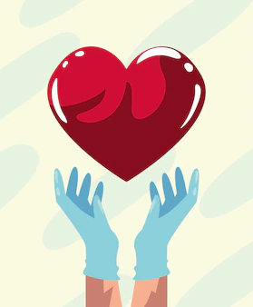
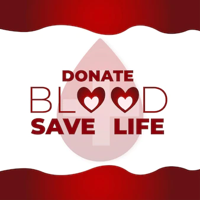

“Happiness doesn’t result from what we get, but from what we give.

“If you’re in the luckiest one percent of humanity, you owe it to the rest of humanity to think about the other 99 percent.
Every two seconds someone needs blood. More than 38,000 blood donations are needed every day. A total of 30 million blood components are transfused each year. The average red blood cell transfusion is approximately 3 pints.

“We make a living by what we get. We make a life by what we give.
You must register to donate blood. This includes providing identification, your medical history, and undergoing a quick physical examination. You’ll also be given some information about blood donation to read.